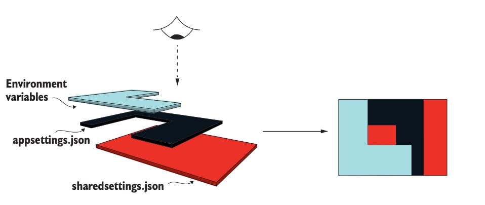

Configuring an ASP.NET Core application
Lesson 07
SW4BED-01
Agenda
- Application configuration
- Options pattern
- Environments
Overview
- Tweak various settings at deploy time
- No need for re-compilation or restarts
- A setting is a value that changes the behavior of an application
- Sources
- JSON, XML, YAML, etc.
- Environment variables
- Command-line arguments
Configuration in ASP.NET Core
Configuration providers
- ASP.NET Core uses configuration providers
- Loads key-value pairs (
{"key":"value"}
- An application can have any number of configuration providers
- Available providers:
- Azure Key Vault
- Azure App
- Environment Variables
- Command-line
- File
- User secrets
- Custom
Loading configurations
- Applied in the following order (default configuration):
- Add host configuration
appsettings.jsonappsettings.{ENVIRONMENT}.json- App secrets (when running in the
Development environment)
- Environment variables
- Command-line arguments
Overriding settings
- Load settings from multiple sources to create "layers" i a configuration
- The order in which configuration providers are added is significant
- Produces a single cohesive configuration object

Loading and overriding settings
examples/lesson-07-configuration/WebAPIConfiguration/Program.cs
Overview
- The preferred way to read hierarchical configuration data
- Provide strongly type access to groups of related settings
- Isolatation by scenario(s) adhere to Interface Segregation Principle (ISP) and separation of concerns
- Validation of configuration data
- Should be used instead of
IConfiguration
- Used troughout the ASP.NET Core
The IOptions interface
- A simple interface with a single property (
Value), which contains the configured POCO options class at runtime
- How to use
IOptions
- Options classes are configured at startup in
Program.cs
- Injected in Controller and/or Model classes
- Options loaded with
IOptions created exactly once
- Use
IOptionsSnapshot to recreate options upon changes
Binding Option classes
- POCO classes need to
- Be non-abstract
- Have a default constructor
- Properties need to adhere to the following rules to bind automatically
- Declared with the
public access modifier
- Have a
get accessor (set-only properties will not be bound)
- Have a
set accessor (or non-null value for complex types)
- Is not an indexer
POCO option class
examples/lesson-07-configuration/WebAPIConfiguration/Options/AppShellOptions.cs
The settings file
examples/lesson-07-configuration/WebAPIConfiguration/material-theme.json
Using settings
examples/lesson-07-configuration/WebAPIConfiguration/Program.cs
Overview
- ASP.NET Core configures application behavior based on environments
- Three environments defined per default:
- Development Used for development on local machines
- Staging A nearly exact replica of the production environment
- Production The environment exposed to end-users
- Defined in enviroment variable
ASPNETCORE_ENVIRONMENT
- If not set, it will default to
Production
Common use cases
- Customization of middleware pipeline
- Exception pages
- Enable
Strict-Transport-Security headers (HSTS)
- Loading environment-specific configuration files
- Add or remove configuration providers
- User Secret Manager for development. Azure Key Vault for production, etc.
Configure service and middleware
examples/lesson-07-configuration/WebAPIConfiguration/Program.cs
Overview
- Never store passwords or other sensitive data in source code
- Production secrets should not be used for development
- Secrets should not be deployed with the application
- They should be accessed through the environment
- Examples of sensitive data:
- Connection strings
- API keys
App secrets
- The Secret Manager tools stores sensitive data during development
- App secrets are stored in a separate location from the project tree
- Not checked into source control
- Does not encrypt the stored secrets and should not be treated as a trusted store
- Secrets are created as name-value pairs
- Use Azure Key Vault in production
How to use Secret Manager
- Initialize user secrets (run from project root directory)
- Set a secret
dotnet user-secrets set "{SECRET NAME}" "{SECRET VALUE}"
- Accessing User Secrets
- Can be mapped to option classes as any other settings
- Can be accessed as any other environment variable
Accessing user secrets
examples/lesson-07-configuration/UserSecrets/Program.cs
Wrap-up
- Application configuration
- Extract configuration from implementation
- Options pattern
- Use strongly-typed configuration objects and dependency injectiong
- Environments
- Change configuration based on environment